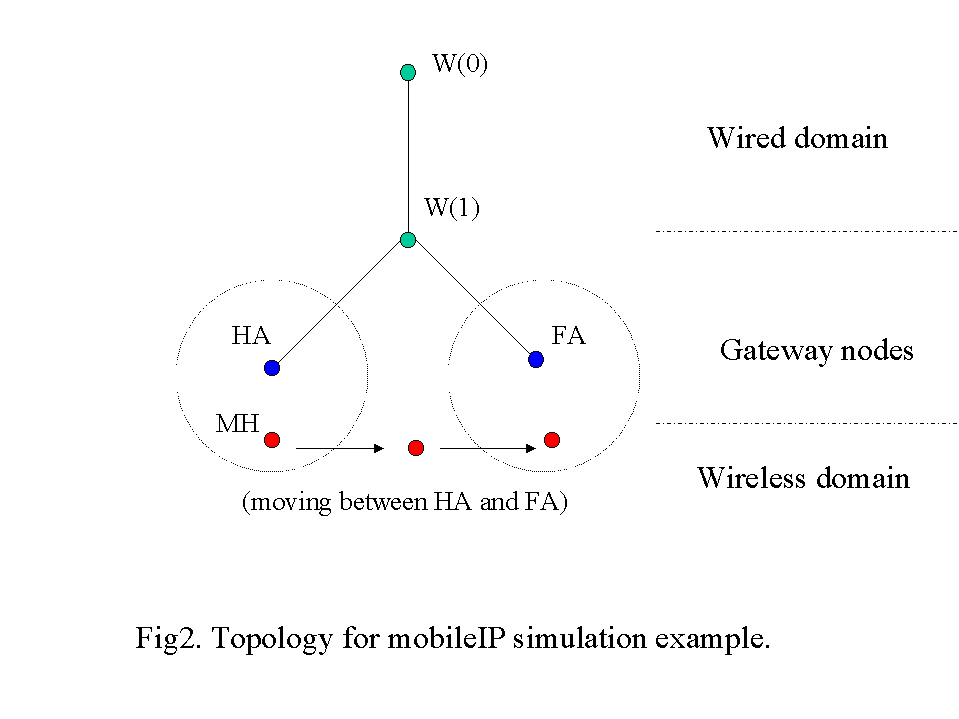

[Previous section] [Next section] [Back to the index]
IMPORTANT: This tutorial chapter uses new node APIs which are not available in the ns2.1b5 version. So please download the daily snapshot unless a release is made for version ns2.1b6 or higher. The current snapshot version is updated daily, so please check the validation test results for that day before downloading, as these snapshots can sometimes be unstable due to ongoing changes made by ns-developers.
X.1. Creating a simple wired-cum-wireless scenario
The wireless simulation described in section IX, supports multi-hop ad-hoc networks or wireless LANs. But we may need to simulate a topology of multiple LANs connected through wired nodes, or in other words we need to create a wired-cum-wireless topology.
In this section we are going to extend the simple wireless topology created in section IX to create a mixed scenario consisting of a wireless and a wired domain, where data is exchanged between the mobile and non-mobile nodes. We are going to make modifications to the tcl script called wireless1.tcl created in section IX.2 and name the resulting wired-cum-wireless scenario file wireless2.tcl.
For the mixed scenario, we are going to have 2 wired nodes, W(0) and W(1), connected to our wireless domain consisting of 3 mobilenodes (nodes 0, 1 & 2) via a base-station node, BS. Base station nodes are like gateways between wireless and wired domains and allow packets to be exchanged between the two types of nodes. For details on base-station node please see section 2 (wired-cum-wireless networking) of chapter 15 of ns notes&doc (now renamed as ns Manual). Fig1. shows the topology for this example described above.
Let us begin by checking what changes need to be made to the list of variables defined at the beginning of wireless1.tcl.
The Adhoc routing protocol is changed to DSDV. Also, we define TCP and CBR connections between the wired and wireless nodes in the script itself. So we won't need to use the connection pattern file used in earlier simulation. Also change the simulation stop time. Note here that we use array opt() instead of val() simply to illustrate that this is no longer a global array variable and its scope is defined only in the test script.
|
|
|
Now we move to the main part of the program. For mixed simulations we need to use hierarchical routing in order to route packets between wireless and wired domains. As explained in section 15.2.1 of ns Manual, in ns, the routing information for wired nodes are based on connectivity of the topology, i.e how are nodes connected to one another through Links. This connectivity information is used to populate the forwarding tables in each wired node. However wireless nodes have no concept of "links". Packets are routed in a wireless topology using their adhoc routing protocols which build forwarding tables by exchanging routing queries among its neighbours. So inorder to exchange pkts among these wired and wireless nodes, we use base-stations which act as gateways between the two domains. We seggregate wired and wireless nodes by placing them in different domains. Domains and sub-domains (or clusters as they are called here) are defined by means of hierarchical topology structure as shown below. After line "set ns [new Simulator]", add the following lines:
|
In the above lines we first configure the node object to have addresstype as Hierarchical. Next the topology hierarchy is defined. Number of domains in this topology is 2 (one for the wired nodes and one for the wireless). Number of clusters in each of these domains is defined as "2 1" which indicates the first domain (wired) to have 2 clusters and the second (wireless) to have 1 cluster. The next line defines the number of nodes in each of these clusters which is "1 1 4"; i.e one node in each of the first 2 clusters (in wired domain) and 4 nodes in the cluster in the wireless domain. So the topology is defined into a 3-level hierarchy (see the topology figure above).
Next we setup tracing for the simulation. Note here that for wired-cum-wireless simulation traces may be generated for both wired and wireless domains. Both the traces are written into the same output file defined here as wireless2-out.tr. In order to differentiate wireless traces from wired ones, all wireless traces begin with "WL". We also setup nam traces. As mentioned earlier nam traces for wireless nodes currently show node movements only.
|
Next we need to create the wired, wireless and base-station nodes. Note here that for all node creations, you have to pass the hierarchical address of the node. So after line "create-god $opt(nn)", add the following lines for creating wired nodes:
|
In order to create base-station node, we need to configure the node structure as shown below. This is part of the new node API which consists of first configuring and then creating nodes. Refer to node API in chapterIX for details about the new node API. Since base-station nodes are gateways between wired and wireless domains they need to have wired routing mechanism turned on which is done by setting node-config option -wiredRouting ON. After creating the base-station node we reconfigure for wireless node and so turn wiredRouting OFF. All other node-config options used for base-station remains the same for mobilenode. Also the BS(0) node is assigned as the base-station node for all the mobilenodes in the wireless domain, so that all pkts originating from mobilenodes and destined outside the wireless domain, will be forwarded by mobilenodes towards their assigned base-station.
Note that it is important for the base-station node to be
in the same domain as the wireless nodes. This is so that all pkts
originating from the wired domain, and destined for a wireless node will
reach the base-station which then uses its adhoc routing protocol to route
the pkt to its correct destination. Thus in a mixed simulation involving
wired and wireless nodes its necessary :
1) to turn on hierarchical routing
2) to create separate domains for wired and wireless nodes. There may
be multiple wired and wireless domains to simulate multiple networks.
3) to have one base-station node in every wireless domain, thru which
the wireless nodes may communicate with nodes outside their domain.
|
Next connect wired nodes and BS and setup TCP traffic between wireless node, node_(0) and wired node W(0), and between W(1) and node_(2), as shown below:
|
This would be followed by the remaining lines from wireless1.tcl (sourcing cp and sc files, telling mobilenodes when to stop and finally running ns). It is possible that some lines of code in wireless2.tcl have not been discussed here. For a complete copy of script wireless2.tcl, download from here.
Run the script. The ns and nam trace files are generated at the end of simulation run. Running wireless2-out.nam shows the movement of mobilenodes and traffic in the wired domain. As mentioned earlier, traffic flow for mobilenodes is not as yet supported in nam. In trace file wireless2-out.tr we see traces for both wired domain and wireless domain (preceeding with "WL" for wireless). At 160.0s, a TCP connection is setup between _3_, (which is node_(0)) and 0, (which is W(0)). Note that the node-ids are created internally by the simulator and are assigned in the order of node creation. At 170s, another TCP connection is setup in the opposite direction, from the wired to the wireless domain. For details on CMUTraces see chapter 15 of ns documentation.
X.2. Running MobileIP in a simple wired-cum-wireless
topology
So far we have created a wired-cum-wireless topology and have exchanged
pkts between a wired and wireless domain via a base-station. But a mobilenode
may roam
outside the domain of its basestation and should still continue to receive
packets destined to it.
In other words it would be interesting to extend mobileIP support in the
wired-cum-wireless scenario we created in section X.1.
For this example we have the same wired domain consisting of 2 wired
nodes, W0 and W1. We have 2 base-station nodes and call them HomeAgent(HA) and
ForeignAgent(FA) respectively.
The wired node W1 is connected to HA and FA as shown in the figure below.
There is a roaming mobilenode called MobileHost(MH) that moves between its
home agent and foreign agents.
We will set up a TCP flow between W0 and MH. As MH moves out from the
domain of its HA, into the domain of FA, we will observe how pkts destined
for MH is redirected by its HA to the FA as per mobileIP protocol
definitions. See fig2 below for the topology described above.

We shall edit wireless2.tcl created in section X.1 to create the wireless-mip script called wireless3.tcl. It may be possible that the whole of wireless3.tcl is not discussed here. So for convinience, you may download a copy of wireless3.tcl from here.
Change number of mobilenodes and time of simulation,
|
In this example we will set up the TCP connection as well as define movement of the MH in the script itself. Hence we are not going to use the cp and sc files.
|
Define the TCP flow starttime,
|
Change number of wired, base-station and mobile nodes. However note that the variable num_bs_nodes is not really used in this script. The base-station nodes, HA and FA, are individually created and handled.
|
After the 2 lines creating ns instance and setting address format to hierarchical, add the following lines to define the topological hierarchy. It is quite similar to that of wireless2.tcl except that now we have a third domain for the FA. Change the cluster and node parameters accordingly.
|
Next set up ns trace and nam files for wireless-mip,
|
So in this topology we have one wired domain (denoted by 0) and 2 wireless domains (denoted by 1 & 2 respectively). Hence as described in section X.1, the wired node addresses remain the same, 0.0.0 and 0.1.0. In the first wireless domain (domain 1) we have base-station, HA and mobilenode, MH, in the same single cluster. Their addresses are 1.0.0 and 1.0.1 respectively. For the second wireless domain (domain 2) we have a base-station, FA with an address of 2.0.0. However in the course of the simulation, the MH will move into the domain of FA and we shall see how pkts originating from a wired domain and destined to MH will reach it as a result of the MobileIP protocol.
Wired nodes will be created as earlier. However in place of a single base-station node, a HA and FA will be created. Note here that to turn the mobileIP flag on we have configure the node structure accordingly using option -mobileIP ON.
|
Next create the mobilehost as follows. Note as before we have to turn off the option -wiredRouting (used for creation of base-station nodes) before creating mobilenodes. Also the HA is setup as the home-agent for the mobilehost. The MH has an address called the care-of-address (COA). Based on the registration/beacons exchanged between the MH and the base-station node (of the domain the MH is currently in), the base-station's address is assigned as the MH's COA. Thus in this simulation, address of HA is assigned initially as the COA of MH. As MH moves in to the domain of FA, its COA changes to that of the FA. For details on MobileIP implementation in ns, read section 15.2.2 of (in wireless networking chapter) ns documentation. Also see files mip.{cc,h}, mip-reg.{cc,h}, tcl/lib/{ns-mip.tcl, ns-wireless-mip.tcl}.
|
Create links between Wired nodes and HA/FA and setup TCP connection:
|
The rest of the script remains unchanged (i.e tell mobilenodes when the simulation stops). Save and run the script. Click here for a copy of the file wireless3.tcl.
While running the script, you may see warnings like "warning: Route to base_stn not known: dropping pkt". This means that as the MH moves from the domain of one base-station into domain of another there may be interim periods when it is not registered to any base-station and thus doesnot know whom to forward pkts destined outside its domain. On completion of the run, ns and nam trace output files "wireless3-out.tr" and "wireless3-out.nam" are created. The nam output shows the movement of the mobilehost and traffic flow in the wired domain. The ns trace output shows traces for both the wired nodes as well as the wireless domain. We see routine beacon broadcast/solicitations sent out by HA/FA and the MH. Initially the TCP pkts are handed down to MH directly by its HA. As MH moves away from HA domain into the domain of the FA, we find the pkts destined for MH, being encapsulated and forwarded to the FA which then strips off or decapsulates the pkt and hands it over to the MH.
[Previous section] [Next section] [Back to the index]
VINT